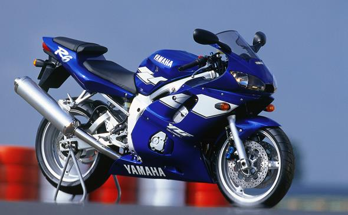
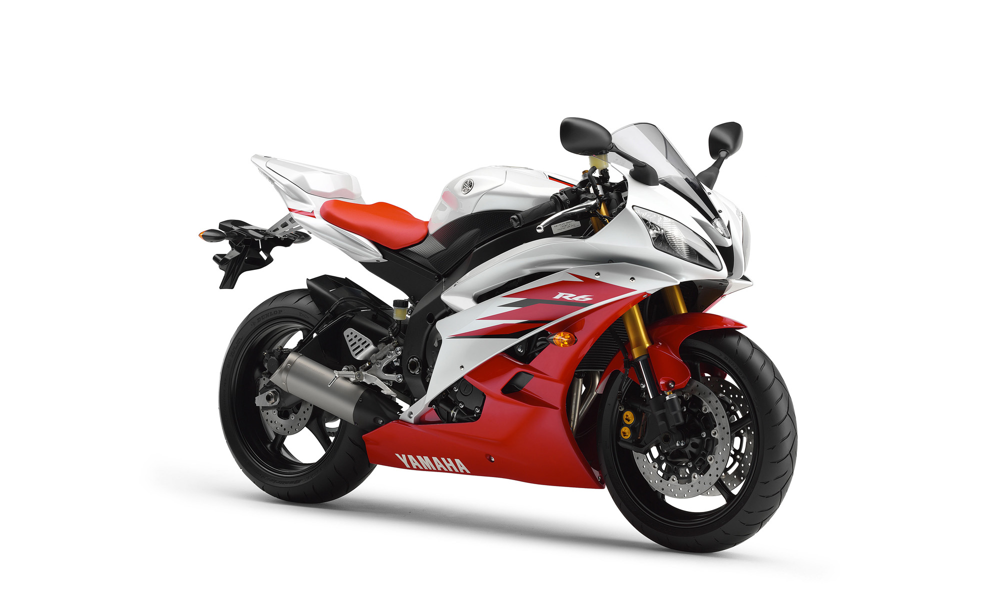
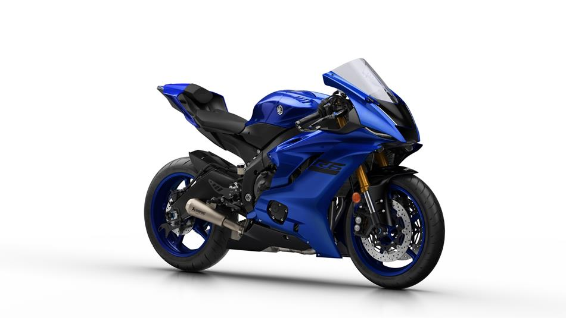

A Yamaha R6 apresentada neste artigo foi lançada em 2008, mas seu primeiro lançamento foi em 1999.
Com um motor de 4 cilindros, a R6 tem 600 cilindradas, potência de 135 cv(cavalos), chegando a
velocidade máxima 270 km/h com seus aspectos originais, podendo chegar a 299km/h com algumas alterações
em seu sistema eletrônico e mecânico. Possui um peso médio de 186kg e sua relação peso/potência é de 1.4 kg/cv
HISTÓRIA

A Yamaha YZF-R6 foi lançada em 1999 como uma versão super esportiva
da YZF-R1, a mil cilindrada da mesma categoria também construida
pela Yamaha. Também foi lançada como companheira para a YZF600R voltada para
a cidade e que foi vendida juntamente com a R6.

Após 7 anos, em 2006, foi lançada o novo modelo com uma mecânica e aerodinâmica
totalmente nova. A moto foi transformada para corrida, tornando-se imbatível
contra todas as 600 cilindradas de todas as categorias.
O estilo deste modelo se manteve,
tendo somente pequenas alterações no visual e mecânica, até meados de 2016.

Quando em 2018, seguindo a mesma proposta da versão anterior, a Yamaha lançou
o novo modelo, melhorando ainda mais sua aerodinâmica e um pouco de sua mecânica
com o objetivo de torna-la ainda mais esportiva.
PORQUE ADQUIRIR?
*Levem o vídeo na brincadeira*
SOM MOTOR
*Deixar o volume no mínimo possível*
Som do motor da R6 com o escapamento livre Akrapovic Megaphone